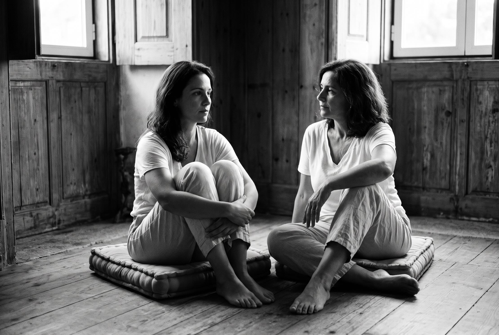

Sentes falta de amar
ou de seres precisa?

O círculo tinha-se desfeito há meia hora. Os outros tinham ido para o refeitório, e o salão de madeira cheirava a lenha e a chá de cidreira esquecido nas canecas. Maria ficou sentada na almofada, de joelhos puxados contra o peito.
Laura não lhe perguntou se estava bem. Arrastou a sua almofada para perto, sentou-se de lado e esperou.
— Sinto falta de amar — disse Maria, por fim. Não olhou para ela. Olhou para a janela, onde os sobreiros começavam a perder a luz. — Sinto falta de pôr este amor no cuidado de alguém. No conforto de alguém. Dos pequenos toques, sabes? Dos gestos que são porto de abrigo. Dos olhares cúmplices. Das conversas sobre nada. — Engoliu em seco. — E sinto falta de ser amada. Estar sozinha não me chega.
Disse a última frase depressa, como quem confessa um defeito.
Laura deixou o silêncio assentar. Lá fora, um cão ladrou duas vezes e calou-se.
— Disseste isso como se pedisses desculpa.
— E não devia?
— Não. — Laura inclinou a cabeça. — Não fomos feitas para nos acalmarmos sozinhas a vida inteira, Maria. O corpo sabe isso antes de nós. Precisa de outro corpo por perto, de um olhar que lhe diga estás aqui, estás segura. Estar sozinha pode ser bom. Pode ser um sítio onde se descansa, onde se deixa de usar os outros como penso para as feridas. Mas não substitui isso. Ninguém se basta. Quem diz que sim está a mentir, ou ainda não percebeu.
Maria soltou um riso curto, molhado.
— Passei anos a achar que era isso que tinha de conseguir. Bastar-me.
— Eu sei. — Laura sorriu. — O que estás a sentir não é falha. É saúde.
Maria limpou os olhos à manga da camisola. Laura esperou que ela voltasse.
— Posso fazer-te uma pergunta desconfortável?
Maria assentiu.
— Disseste “pôr este amor no cuidado de alguém”. Ouvi a beleza disso. Mas também ouvi outra coisa. — Laura falou devagar, sem pressa de chegar. — A Sofia vai-se embora. O Pedro não tarda. Durante dezoito anos houve sempre alguém de quem cuidar. E agora…
Maria fechou os olhos.
— Sentes falta de amar — continuou Laura, baixinho — ou sentes falta de seres precisa?
A pergunta ficou entre as duas como uma pedra pousada numa mesa.
— Não sei — disse Maria, por fim. — Das duas coisas. — Pausa. — Não as sei separar.
— Quase ninguém sabe. Sobretudo as mães. — Laura puxou também os joelhos, ficando à altura dela. — Não estou a dizer que o teu amor é falso. Estou a dizer que talvez o desafio não seja encontrar alguém de quem cuidar. Isso tu fazes de olhos fechados. Talvez seja encontrar alguém com quem possas não servir para nada. Estar quieta. Cansada. Inútil. E ser amada na mesma.
Maria olhou para ela pela primeira vez.
— Isso assusta-me mais.
— Pois. — Laura sorriu. — Normalmente é sinal de que é por aí.
O sino do refeitório tocou ao longe. Nenhuma das duas se mexeu.
— Falaste das conversas sobre nada — disse Laura. — Dos olhares cúmplices.
— Parece tão pouco, dito assim.
— Não é pouco. É quase tudo. O amor não vive nas grandes declarações. Vive no café que alguém te faz sem perguntar como gostas, porque já sabe. No olhar de esguelha num jantar, quando alguém diz uma parvoíce e só vocês os dois percebem. Na mão que te passa pelo ombro no corredor. — Fez uma pausa. — Tu já tiveste isso.
— Tive. — A voz falhou-lhe. — Eu e o Tobias tínhamos voltado a ter isso. Há poucas semanas. — Fez um silêncio e escondeu o olhar nas mãos. — E com a Bárbara. Mas não posso…
Não acabou a frase.
Laura não pestanejou ao ouvir o segundo nome. Esperou.
— Dói-me tanto ficar sem eles.
— Então o que sentes também é luto. Não só dele, e dela. Do “nós”. Daquele corredor. É legítimo chorá-lo, mesmo que a decisão de o deixar seja tua.
Maria chorou, então, sem se esconder. Laura não lhe tocou logo. Deixou o choro ter espaço, e só depois pousou a mão nas costas dela, aberta e quieta, sem a afagar.
Quando o choro amainou, Laura falou ainda mais baixo.
— Queria pedir-te uma coisa. Não transformes isto numa emergência.
— Como assim?
— Quando dói assim, a vontade é tapar o buraco depressa. Com alguém, com trabalho, com o que estiver à mão. Não corras. Este vazio não te está a pedir que o mobiles já. Está só a apontar para aquilo de que precisas. É um farol, não uma sentença.
Maria respirou fundo, devagar. O peito doía-lhe, mas de outra maneira.
— E entretanto?
— Entretanto, ficas com ela. Com essa parte de ti que só queria uma cabeça no ombro enquanto vê televisão. E dizes-lhe: eu sei. Eu também sinto falta. É duro. Mas nós aguentamos este silêncio.
Maria riu-se no meio das lágrimas.
— Pareces a minha avó.
— A tua avó era uma mulher sensata. — Laura tirou a mão das costas dela. — Tiraste a armadura, Maria. O ar frio na pele dói, claro que dói. Mas é sinal de que estás pronta para um amor a sério. Não para uma fuga.
Ficaram caladas. A luz lá fora tinha passado de laranja a cinzento, e o salão começava a arrefecer.
— Como é que o teu corpo está a receber isto? — perguntou Laura. — Ouvir que o que sentes não é um defeito?
Maria pensou antes de responder. Pousou a mão no esterno, como quem procura o sítio exato.
— Mais leve — disse. — E com medo.
— As duas coisas cabem — disse Laura, levantando-se. — Anda jantar.
← Voltar a Livros & Ensaios